Latar Belakang saya memilih game ini yaitu Diner Dash merupakan salah satu game yang mudah dimainkan namun tidak membosankan, game ini masih populer dari dulu sampai sekarang . DI dalam game ini diajarkan bagaimana memanajemen waktu yang baik dalam mencapai suatu target. Banyak yang mengira game ini adalah game yang dikhususkan untuk kaum hawa, karena dalam permainan ini dan tokoh utamanya wanita dan segala yang dilakukan dalam game ini layaknya wanita yang bekerja di restoran makanan.Game ini pertama kali keluar hanya bisa dimainkan di platfom PC saja, pada jaman sekarang game tersebut bisa dimainkan ke berbagai platfom seperti ponsel, gamepad dan konsol yang berbasis game lainnya.
Tidak hanya bermain saja, disini kita juga mendapatkan edukasi setelah memainkan game diner dash, berikut merupakan nilai edukasi yang bisa didapatkan dalam game ini :
• Bagaimana cara mengatur suatu bisinis/kegiatan (manajemen waktu) agar mendapat mencapai target optimal. Contoh : Dalam game ini kita dituntut memanajemen restoran untuk mencapai target dan waktu yang ditentukan agar bisa naik level.
• Melatih kesabaran. Contoh : Dalam game ini ketika pelanggan ada yang marah karena menunggu suatu pesanan, pasti kita tidak sabar untuk cepat menyelesaikan level tersebut.
• Selalu siap dan siaga. Contoh : Dalam game ini pelanggan akan terus berdatangan ke restoran, maka kita dituntut selalu siap dan siaga melayani pelanggan tersebut.
• Melatih kecepatan dan ketepatan. Contoh : Setiap pelanggan mempunyai kesukaan meja sesuai penampilan mereka. Kita harus berpikir akan hal ini saat menempatkan pelanggan, karena penempatan yang salah akan membuat Anda gagal di level ini. Dalam game ini apabila kita melayani pelanggan dengan cepat maka pelanggan akan memberikan uang yang lebih banyak
Penjelasan dan Platform Diner Dash
Diner dash game yang dibuat oleh Game Lab yang dikenal dengan Game House.
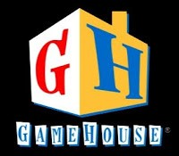 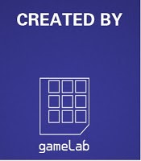Diner Dash adalah video game strategi dan permainan manajemen waktu awalnya dikembangkan oleh New York City berbasis permainan Amerika pembangunan studio GameLab dan diterbitkan oleh PlayFirst berbasis di San Francisco. Sekarang dimiliki dan diterbitkan oleh PlayFirst. Ini adalah salah satu dari top-selling download game sepanjang masa, tersedia dalam berbagai platform seperti PC, Mac, konsol, dan mobile.
Sebuah Xbox Arcade versi Live dari permainan ini dirilis oleh Hudson Lunak pada 18 November 2009, Jaringan PlayStation versi pada tanggal 25 November 2009, versi WiiWare pada 16 Februari 2010 di Jepang, serta Eropa pada tanggal 26 Maret 2010 dan Amerika Utara pada tanggal 29 Maret 2010, tetapi versi ini tidak lagi pada layanan WiiWare Diner Dash kemudian menjadi sebuah game mobile saat porting ke ponsel oleh Glu Mobile, diberi rilis ritel,. dan tersedia melalui 100% iklan-didukung download. Versi telah dibuat untuk platform PlayStation Portable, Nintendo DS,Ios dan Android.
Diner Dash juga digunakan untuk merujuk ke waralaba Diner Dash, yang telah melahirkan banyak sekuel – Diner Dash 2: Rescue Restaurant dirilis pada awal tahun 2006, Diner Dash: Flo on the Go dirilis pada akhir tahun 2006, Diner Dash: Hometown Hero adalah dirilis pada akhir 2007, dan Diner Dash 5: BOOM! dirilis pada awal 2010.
Alur Cerita Game Diner Dash
Story Game
Flo adalah seorang pekerja keras di sebuah perusahaan besar di pasar saham Dinertown. Dia lelah melakukan semua pekerjaan dan merasa terpenuhi. Flo berhenti dari pekerjaannya, berharap dia bisa bekerja di tempat lain.Dia melihat sebuah lari ke restoran tua, yang ia beli. Dia harus memperoleh uang yang cukup untuk memperbaiki restoran. Kemudian setelah mendapatkan pembiayaan lebih, ia membuka sebuah restoran baru yang disebut Flo Tiki Palace, ketika penghasilan yang cukup ia kemudian membuka restoran pantai disebut Flo Go and Eat Seafood , ketika selesai di tepi pantai ia membuka sebuah restoran baru yang memukau disebut Chez Flo.
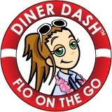 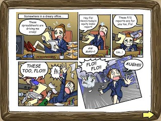 Flo adalah seorang pekerja keras di sebuah perusahaan besar di pasar saham Dinertown.Dia lelah melakukan semua pekerjaan dan merasa terpenuhi. Flo berhenti dari pekerjaannya, berharap dia bisa bekerja di tempat lain.. 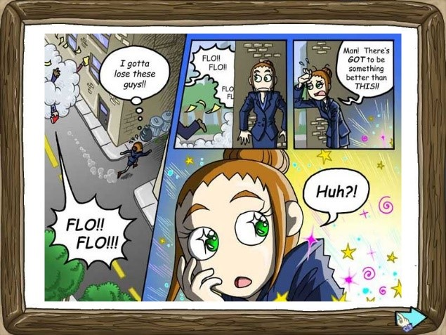 . 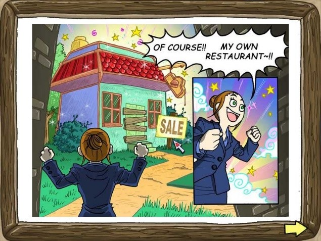 Ia membuka sebuah restoran baru yang memukau disebut Chez Flo.Gameplay dan Controls
Game ini tidak membawa suasana yang baru ketika dirilis untuk Android, gameplay yang disajikan sama seperti game versi PC yaitu menggunakan tampilan yang 2D dan full warna. Game ini memiliki seorang tokoh utama yaitu Flo, seorang pelayan yang fokus utamanya adalah menjaga restorannya dan pelanggan merasa puas sehingga pelanggan tersebut tidak bosan untuk kembali ke toko yang dimiliki Flo.
Dari segi kontrol sangat mudah sekali yaitu menunggu seorang tamu lalu drag and drop tamu tersebut dengan cara swipe ke tempat meja dan menunggu tamu untuk memesan makanan. Gameplay yang disajikan adalah time management di mana Anda diharuskan menyelesaikan misi suatu level dengan waktu yang telah ditentukan. Pelanggan memiliki serangkaian hati di atas kepala mereka yang menunjukkan suasana hati mereka. Semakin lama pelanggan dipaksa untuk menunggu, hati semakin ia kehilangan. Setiap jenis pelanggan memiliki derajat kesabaran yang berbeda dan kebiasaan tipping yang berbeda. Flo dapat melakukan berbagai tindakan, seperti berbicara dengan pelanggan atau melayani mereka minuman, untuk menghidupkan kembali hati pelanggan agar tidak berkurang . Ketika pelanggan kehilangan semua hati mereka, mereka meninggalkan restoran, dan pemain kehilangan poin .
Bukan hanya itu yang harus Anda lakukan dalam game ini karena pada awal permainan hanya ada satu karyawan yaitu Flo sendiri jadi untuk menyelesaikan tiap misi seperti melayani tamu dengan mengambil pesanan, membuat makanan atau minuman, mengantarkannya lagi, membersihkan meja, dan menutup toko dilakukannya sendirian tanpa ada karyawan lain. Namun jangan takut untuk ke depannya lagi Flo akan ditemani oleh karyawan-karyawan yang akan Anda beli di shop. Untuk bisa membeli karyawan Anda harus menyelesaikan level-level tertentu baru Anda bisa menyewa karyawan dan mengupdate keadaan restauran.
 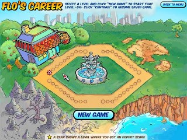
Dalam game ini kita memilih permainan mana yang akan kita pilih, menggunakan level atau score, di tampilan ini ada menu menu yang lainnya juga yang dapat membantu user untuk memudahkan jika menemui kesulitan..
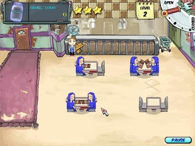
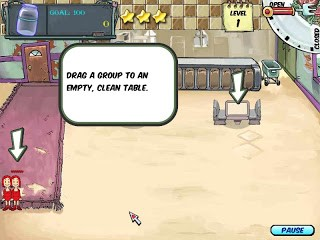
Dalam game ini user melayani para pembeli dengan mengantarkannya ke meja, lalu mengambil menu dan memberikannya ke koki setelah masakannya jadi diantar ke meja dan setelah selesai user mengambil bill dan membereskan meja makan.
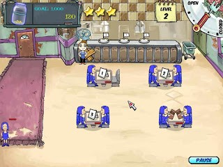
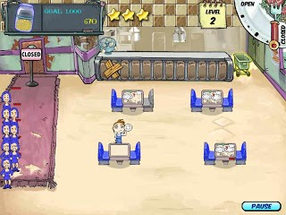
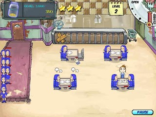
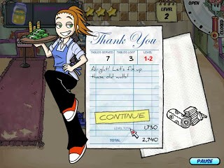
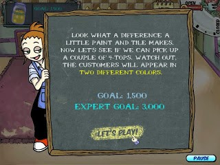
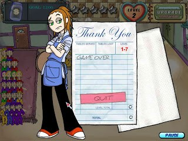
Dalam hal ini user harus cepat melayani pembeli, jagan sampai mengantri banyak,karena menyebabkan berkurangnya poin nilai yang di peroleh. Jika user bisa menyelesaikan permainan dengan cepat maka user akan mendapatkan hasil kerjanya, dan dapat melanjutkan ke level yang selanjutnya. Jika user tidak dapat menyelesaikannya, maka user harus mengulangi permainan,atau memilih option quit untuk meninggalkan permainan Dinner Dash.
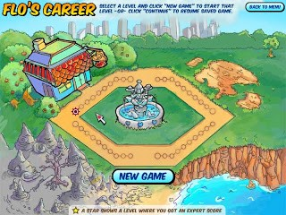
Dalam game ini kita memilih permainan mana yang akan kita pilih, menggunakan level atau score, di tampilan ini ada menu menu yang lainnya juga yang dapat membantu user untuk memudahkan jika menemui kesulitan..
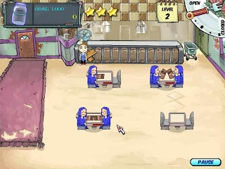
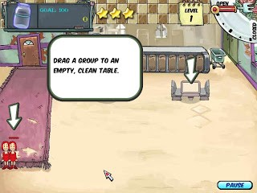
Dalam game ini user melayani para pembeli dengan mengantarkannya ke meja, lalu mengambil menu dan memberikannya ke koki setelah masakannya jadi diantar ke meja dan setelah selesai user mengambil bill dan membereskan meja makan.
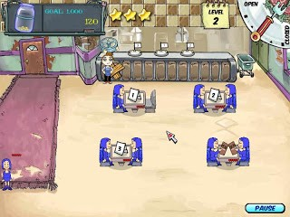
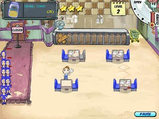
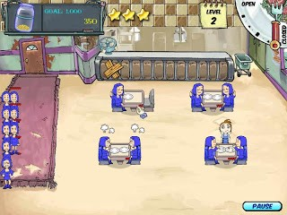
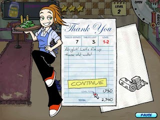
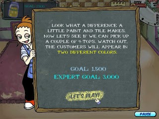
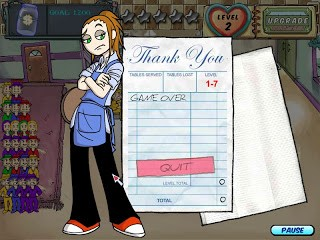
Dalam hal ini user harus cepat melayani pembeli, jagan sampai mengantri banyak,karena menyebabkan berkurangnya poin nilai yang di peroleh. Jika user bisa menyelesaikan permainan dengan cepat maka user akan mendapatkan hasil kerjanya, dan dapat melanjutkan ke level yang selanjutnya. Jika user tidak dapat menyelesaikannya, maka user harus mengulangi permainan,atau memilih option quit untuk meninggalkan permainan Dinner Dash.
Graphic dan Sounds
Grafik dalam game ini masih sama seperti yang digunakan dalam platfom PC yaitu menggunakan grafik yang 2D kamera yang diterapkan di atas sehingga Anda bisa melihat semua sudut. Segi musik masih sama menggunakan musik terdahulu sehingga bagi Anda yang terbiasa memainkan game ini di PC akan familiar sekali saat memainkannya kembali di ponsel Android. Walapun masih menggunakan engine yang sama seperti di platfom PC game ini masih banyak sekali yang memainkannya.
- - -Realitas Fakta :
• Proses pelayanan dan ekspresi pengunjung seperti pada sebenarnya.
Realitas Proses / sebab – akibat :
• Jika pengunjung tidak segera diberikan tempat duduk pengunjung akan marah.
• Jika pengunjung tidak segara dilayani pengunjung akan marah.
• Jika pengunjung terlalu lama menunggu pengunjung akan pulang tanpa harus membayar.
• Semakin cepat melayani ke pelanggan akan memberikan poin besar.
Realitas random :
• Jumlah pengunjung tiap kali datang
Realitas Audio dan Video :
• ketika pengunjung datang akan menunjukan suara keramaian
• Akan terdengar bel ketika masakan telah selesai
• Selesai makan dan membayar pengunjung menampilkan ekspresi kegembiraan diikuti suara.
Diner Dash juga telah melahirkan banyak sekuel diantaranya
DinerDash 1
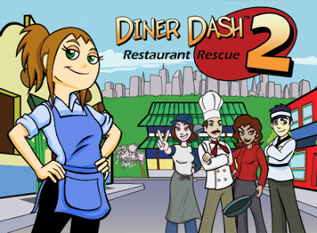
Diner Dash 2 Restaurant Rescue yang dirilis pada awal tahun 2006
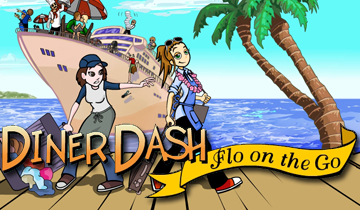
Diner Dash Flo on the Go dirilis pada akhir tahun 2006
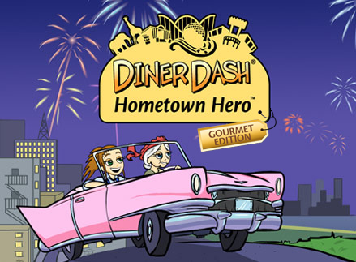
Diner Dash Hometown Hero dirilis pada akhir 2007
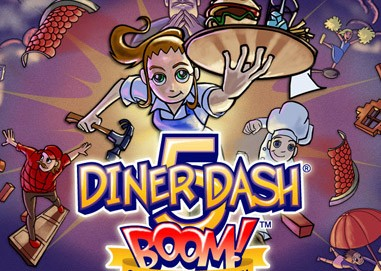
Diner Dash 5 BOOM! dirilis pada awal 2010.
Hal-Hal yang membuat banyak orang bermain Diner Dash (terutama kaum wanita) dikarenakan cerita dari permainan ini bertema sebagai pelayan dengan latar game yang menarik, tetapi gamers dikalangan pria pun tidak kalah banyaknya,yang menjadikan diner dash terus digermarii dari tahun ketahun karena Diner Dash terus mengupdate dan membuat sekuel-sekuel baruu yang lebih menarik serta peningkatan kualitas graphics yang kian membaik.Dengan melihat poster atau iklan dari game diner dash banyak membuat orang penasaran untuk mendownload dan memainkannya.
Kekurangan dan Kelebihan
Kelebihan:
1. Game ini mudah di mainkan, terutama para wanita yang memainkannya, karena dibuat tidak terlalu rumit
2. Banyak option-option yang dapat memudahkan user jika menemui kesulitan
3. Desain di Game ini sudah bagus, mulai dari karakter Flo, pembeli serta tata restoran pun di desain dengan bagus.
Kekurangan:
1. Terlalu banyak option-option yang membingungkan, mungkin karena tidak ada perbedaan desain di setiap optionnya.
2. Game ini karakter Flo yang dimainkan oleh user tidak dapat bergerak cepat sigap, kadang para pembeli lama di meja makan sehingga para pembeli menjadi marah, dan berdampak pada nilai.